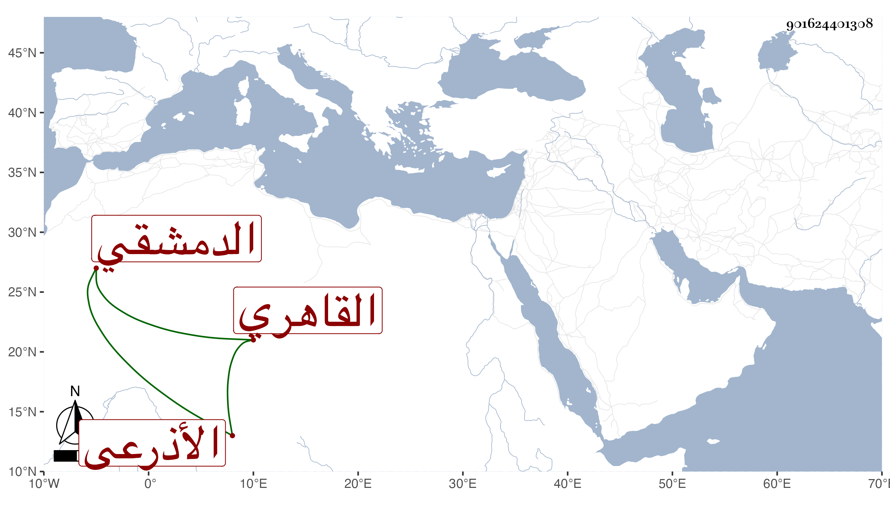

0902Sakhawi.DawLamic.ITO20230111-ara1.EIS1600.901624401308
Biography ID: 901624401308
61
عبد الله بن الحسن بن علي بن محمد بن عبد الرحمن الجمال الدمشقي الأصل القاهري الأذرعي أخو الشهاب أحمد الماضي ووالد البدر محمد الآتي . قرأ القرآن وبرع في الموسيقى ونادم عبد الباسط بل كان أحد موقعي الدست ، ولما سافر يحيى بن العطار على مشيخة الباسطية القدسية رغب له عن أشياء من وظائفه رغبة أمانة لوثوقه به فلما عاد أعطاه ما اجتمع له منها مع عود الجهات . مات في شوال سنة ست وأربعين . أرخه العيني ووصفه الخيضري بالقاضي .
